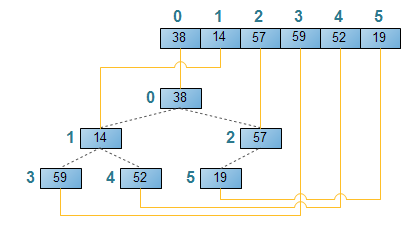

Heap 是一種資料結構，並且有分兩種：max heap 跟 min heap，兩種的原理其實雷同， 我們直接拿 max heap 來講。先讓大家看一張 max heap 的圖片：

大家可以發現，max heap 滿足了兩個性質： 父節點一定大於子節點 整個樹的根節點一定是最大值（可以由 1 推出來） 而要用陣列表示 heap 也很簡單，會像這樣：
所以 heap sort 就是利用這個資料結構做排序，流程很簡單： 1.讀進來的陣列建成 max heap（這時候 arr[0] 一定是這陣列最大值） 2.把 arr[0] 跟最後一個節點互換（其實是最後一個還沒排序過的節點） 3.調整成 max heap，回到步驟 2 heap sort 其實有點複雜，複雜到可以再獨立出來一篇了... 但簡單來說呢，就是改良版的選擇排序法，每一次都選最大值出來，然後把剩下的數字再調整成 max heap。
因為要測試的關係，所以每個排序法前面都會加上：arr = arr.slice()避免修改到原本的 array。